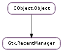

| static | get_default() |
| static | new() |
| add_full(uri, recent_data) | |
| add_item(uri) | |
| get_items() | |
| has_item(uri) | |
| lookup_item(uri) | |
| move_item(uri, new_uri) | |
| purge_items() | |
| remove_item(uri) |
| Name | Type | Flags | Description |
|---|---|---|---|
| filename | str | r/w/c | The full path to the file to be used to store and read the list |
| size | int | r | The size of the recently used resources list |
| Name | Parameters | Return | Description |
|---|---|---|---|
| changed | Emitted when the current recently used resources manager changes its contents, either by calling Gtk.RecentManager.add_item () or by another application. |
| Name | Type | Access |
|---|---|---|
| parent_instance | GObject.Object | r |
Bases: GObject.Object
Gtk.RecentManager provides a facility for adding, removing and looking up recently used files. Each recently used file is identified by its URI, and has meta-data associated to it, like the names and command lines of the applications that have registered it, the number of time each application has registered the same file, the mime type of the file and whether the file should be displayed only by the applications that have registered it.
The recently used files list is per user.
The Gtk.RecentManager acts like a database of all the recently used files. You can create new Gtk.RecentManager objects, but it is more efficient to use the default manager created by GTK+.
Adding a new recently used file is as simple as:
GtkRecentManager *manager;
manager = gtk_recent_manager_get_default ();
gtk_recent_manager_add_item (manager, file_uri);
The Gtk.RecentManager will try to gather all the needed information from the file itself through GIO.
Looking up the meta-data associated with a recently used file given its URI requires calling Gtk.RecentManager.lookup_item ():
GtkRecentManager *manager;
GtkRecentInfo *info;
GError *error = NULL;
manager = gtk_recent_manager_get_default ();
info = gtk_recent_manager_lookup_item (manager, file_uri, &error);
if (error)
{
g_warning ("Could not find the file: %s", error->message);
g_error_free (error);
}
else
{
/* Use the info object */
gtk_recent_info_unref (info);
}
In order to retrieve the list of recently used files, you can use Gtk.RecentManager.get_items (), which returns a list of Gtk.RecentInfo structures.
A Gtk.RecentManager is the model used to populate the contents of one, or more Gtk.RecentChooser implementations.
The maximum age of the recently used files list is controllable through the Gtk.Settings :gtk-recent-files-max-age property.
Recently used files are supported since GTK+ 2.10.
| Returns: | A unique Gtk.RecentManager. Do not ref or unref it. |
|---|---|
| Return type: | Gtk.RecentManager |
Gets a unique instance of Gtk.RecentManager, that you can share in your application without caring about memory management.
| Returns: | A newly created Gtk.RecentManager object. |
|---|---|
| Return type: | Gtk.RecentManager |
Creates a new recent manager object. Recent manager objects are used to handle the list of recently used resources. A Gtk.RecentManager object monitors the recently used resources list, and emits the “changed” signal each time something inside the list changes.
Gtk.RecentManager objects are expensive: be sure to create them only when needed. You should use Gtk.RecentManager.get_default () instead.
| Parameters: |
|
|---|---|
| Returns: | True if the new item was successfully added to the recently used resources list, False otherwise. |
| Return type: |
Adds a new resource, pointed by uri, into the recently used resources list, using the metadata specified inside the Gtk.RecentData structure passed in recent_data.
The passed URI will be used to identify this resource inside the list.
In order to register the new recently used resource, metadata about the resource must be passed as well as the URI; the metadata is stored in a Gtk.RecentData structure, which must contain the MIME type of the resource pointed by the URI; the name of the application that is registering the item, and a command line to be used when launching the item.
Optionally, a Gtk.RecentData structure might contain a UTF-8 string to be used when viewing the item instead of the last component of the URI; a short description of the item; whether the item should be considered private - that is, should be displayed only by the applications that have registered it.
| Parameters: | uri (str) – a valid URI |
|---|---|
| Returns: | True if the new item was successfully added to the recently used resources list |
| Return type: | bool |
Adds a new resource, pointed by uri, into the recently used resources list.
This function automatically retrieves some of the needed metadata and setting other metadata to common default values; it then feeds the data to Gtk.RecentManager.add_full ().
See Gtk.RecentManager.add_full () if you want to explicitly define the metadata for the resource pointed by uri.
| Returns: | a list of newly allocated Gtk.RecentInfo objects. Use Gtk.RecentInfo.unref () on each item inside the list, and then free the list itself using GLib.List.free (). |
|---|---|
| Return type: | [Gtk.RecentInfo] |
Gets the list of recently used resources.
| Parameters: | uri (str) – a URI |
|---|---|
| Returns: | True if the resource was found, False otherwise. |
| Return type: | bool |
Checks whether there is a recently used resource registered with uri inside the recent manager.
| Parameters: | uri (str) – a URI |
|---|---|
| Raises: | GLib.GError |
| Returns: | a Gtk.RecentInfo structure containing information about the resource pointed by uri, or None if the URI was not registered in the recently used resources list. Free with Gtk.RecentInfo.unref (). |
| Return type: | Gtk.RecentInfo |
Searches for a URI inside the recently used resources list, and returns a structure containing informations about the resource like its MIME type, or its display name.
| Parameters: | |
|---|---|
| Raises: | |
| Returns: | True on success. |
| Return type: |
Changes the location of a recently used resource from uri to new_uri.
Please note that this function will not affect the resource pointed by the URIs, but only the URI used in the recently used resources list.
| Raises: | GLib.GError |
|---|---|
| Returns: | the number of items that have been removed from the recently used resources list. |
| Return type: | int |
Purges every item from the recently used resources list.
| Parameters: | uri (str) – the URI of the item you wish to remove |
|---|---|
| Raises: | GLib.GError |
| Returns: | True if the item pointed by uri has been successfully removed by the recently used resources list, and False otherwise. |
| Return type: | bool |
Removes a resource pointed by uri from the recently used resources list handled by a recent manager.